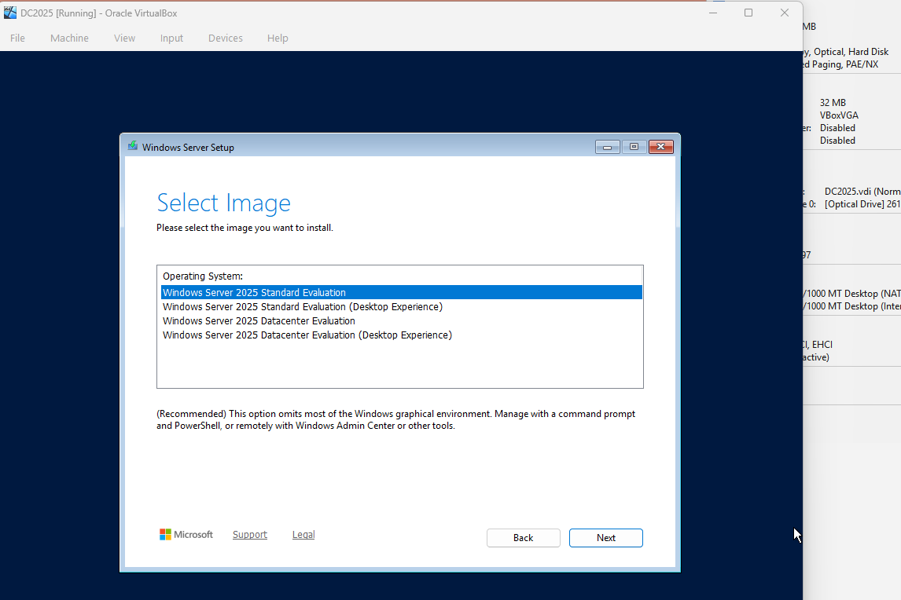
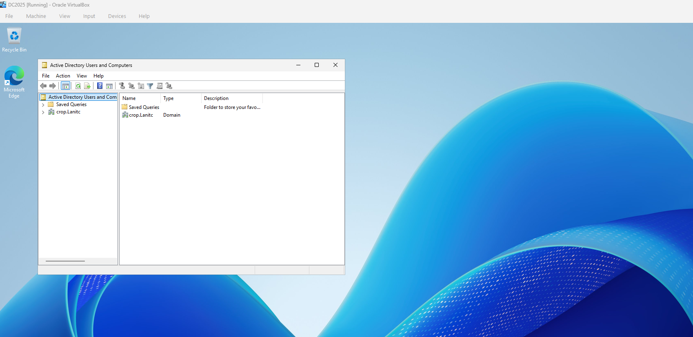
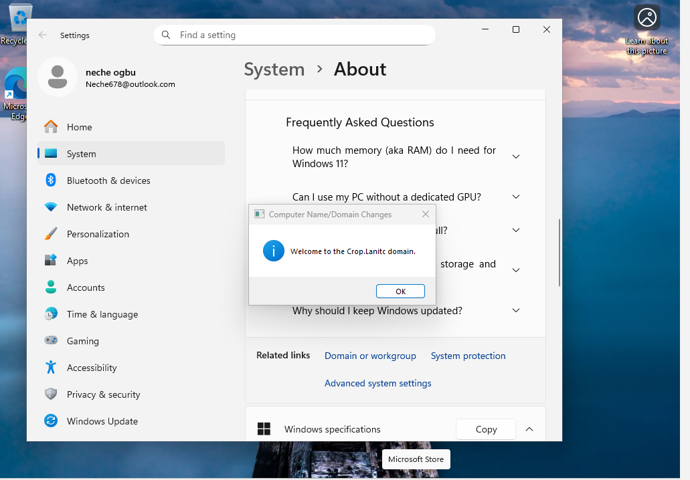
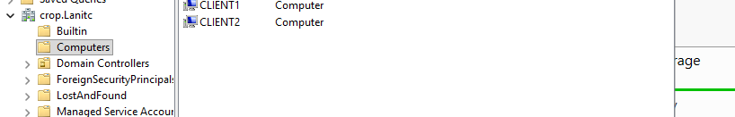

Enterprise Active Directory | Entra ID Sync | Group Policy | File Server RBAC
📌 Project Overview
This project demonstrates hands-on experience building a hybrid enterprise environment
combining Windows Server 2025 Active Directory with Microsoft Entra ID
(Azure AD). The lab simulates a real corporate IT infrastructure with on-premises identity
management synchronized to the cloud, complete with security policies, file server access control,
and modern authentication.
Key Focus: Bridging traditional on-premises infrastructure with modern cloud
identity security—essential skills for Junior System Administrator and IAM Analyst roles.
🏗️ Lab Environment & Architecture
Windows Server 2025 - Domain Controller (DC01)
Active Directory Domain Services (AD DS)
File Server (FILESERVER) with role-based access control
Windows 11 Clients - CLIENT1 & CLIENT2 (domain-joined)
Microsoft Entra ID (cloud identity)
Entra Connect - Hybrid identity synchronization
Oracle VirtualBox - Virtualization platform
Network Configuration
Domain: crop.Lanitc
Internal Network: 172.16.0.0/24
DC01: 172.16.0.1 (DNS/Gateway)
FILESERVER: RBAC-enabled file shares
Clients: Domain-joined Windows 11 workstations
🖥️ Infrastructure Setup
1️⃣ Windows Server 2025 Installation
Installed Windows Server 2025 Standard Evaluation
Configured static IP addressing
Promoted server to Domain Controller
Created crop.Lanitc Active Directory domain


2️⃣ Domain-Joined Clients
Deployed 2 Windows 11 VMs (CLIENT1, CLIENT2)
Successfully joined to crop.Lanitc domain
Configured domain user authentication
Verified domain connectivity and Group Policy application


👥 Active Directory Configuration
Organizational Unit (OU) Structure
Created UserGR OU for departmental organization
Sub-OUs: Finance, HR, Users
Organized computers in Computers OU
Separated servers in Servers OU (FILESERVER)
Security Groups & RBAC
Created Finance_Users security group
Created HR_Users security group
Created IT_Users security group
Implemented role-based access control for file shares
Account syncs to Microsoft Entra ID via Entra Connect
User can now access cloud services with same credentials
Single Sign-On provides seamless authentication
🧪 Testing & Validation
Access Control Tests
✅ Finance user successfully accesses Finance share
✅ HR user successfully accesses HR share
❌ Cross-department access properly denied
✅ Public share readable by all domain users
Group Policy Validation
✅ Drive mapping GPO applies successfully
✅ H: drive mapped to correct department share
✅ Password policies enforced (tested with weak password)
✅ Account lockout working after 5 failed attempts
Hybrid Identity Verification
✅ All users synced to Entra ID (8 users)
✅ "On-premises sync enabled: Yes" confirmed
✅ Last sync timestamp verified (Feb 13, 2026)
✅ Distinguished names properly mapped
Commands Used
gpupdate /force - Force Group Policy refresh
gpresult /r - View applied GPOs
net share - Verify file shares
Start-ADSyncSyncCycle - Force Entra Connect sync
Get-ADSyncScheduler - Check sync status
🛠️ Troubleshooting & Problem Solving
Issues Encountered & Solutions
Issue: Drive mappings not appearing for users Solution: Changed GPO security filtering to "Authenticated Users"
with item-level targeting for specific groups
Issue: Entra Connect - "Enterprise Admin account not allowed" Solution: Used "Create new AD account" option to let Entra Connect
create MSOL service account with minimum permissions
Issue: IE Enhanced Security blocking Entra Connect setup Solution: Disabled IE ESC via Server Manager for Administrators
Issue: Network discovery disabled on clients Solution: Enabled network discovery and file sharing in
Network and Sharing Center